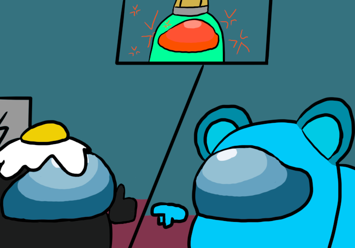

First Discussion
 You remembered that you and Blue confirmed each other as innocent back in the Medbay, so you decide to bring it up.
You : Now hold on a second, I am innocent and I have proof to back it up. Blue?
Blue : Yeah, I saw Black scanning in the Medbay and he saw me filling up the vials. Green is definitely suspicious!
Orange : Actually, now that you mention it, I did happen to see Black turn left into the left hallway from the cafeteria. Pretty sure it's safe to say that it was Green who killed White. All in favor of kicking off Green, raise your hand.
Everyone : *raises hand*
Green : Awh man. It's hard being green.